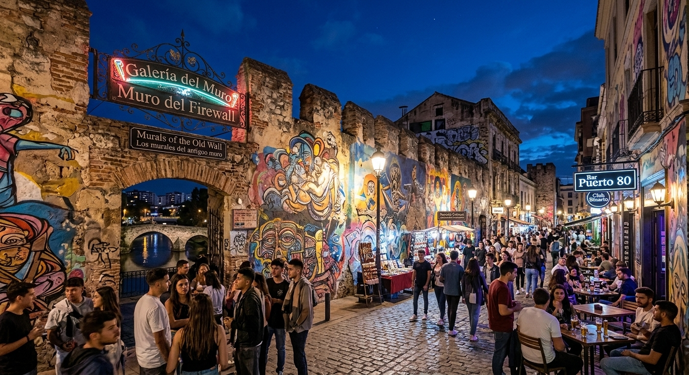

El Muro del Firewall es un barrio de ambiente joven, vida nocturna y mucho arte callejero. Conserva el antiguo muro que protegía la ciudad, hoy cubierto de murales.

Muro del Firewall y su arte
¿Qué se puede hacer?
Recorrer la Galería del Muro, un tramo del antiguo firewall decorado con murales.
Pasear junto al río Binario.
Visitar bares como Puerto 80, restaurantes y clubes.
Oportunidad de comprar objetos artesanales en la feria de la peatonal.
Participar de mercados y actividades culturales.
¿Por qué se recomienda visitarlo?
Es uno de los mejores lugares para ver cómo la historia defensiva de Westview se mezcla con su cultura contemporánea.